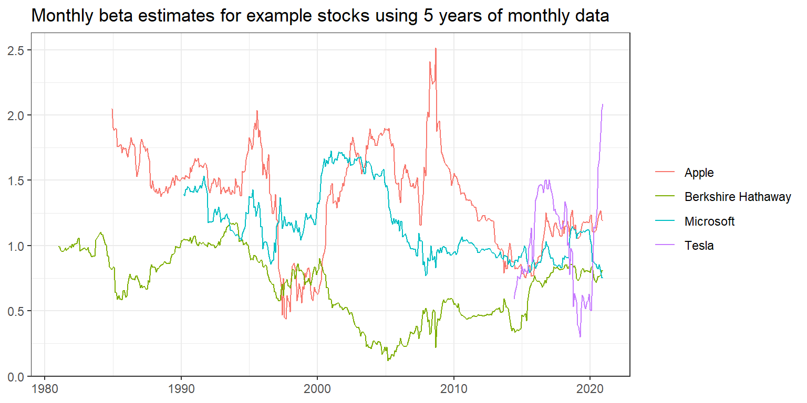

4 Beta Estimation
In this section, we introduce you to an important concept in financial economics: the exposure of an individual stock to changes in the market portfolio. According to the Capital Asset Pricing Model (CAPM), cross-sectional variation in expected asset returns should be a function of the covariance between the return of the asset and the return on the market portfolio – the beta. This section proposes an estimation procedure for these so-called market betas. We do not go into details about the foundations of market beta, but simply refer to any treatment of the CAPM for further information. More importantly, we provide details about all the functions that we use to compute the results.
We use the following packages throughout this section:
4.1 Estimate beta using monthly returns
The estimation procedure is based on a rolling window estimation where we may use either monthly or daily returns and different window lengths. First, let us start with the monthly data we prepared in an earlier chapter.
tidy_finance <- dbConnect(SQLite(), "data/tidy_finance.sqlite", extended_types = TRUE)
crsp_monthly <- tbl(tidy_finance, "crsp_monthly") %>%
collect()
factors_ff_monthly <- tbl(tidy_finance, "factors_ff_monthly") %>%
collect()
crsp_monthly <- crsp_monthly %>%
left_join(factors_ff_monthly, by = "month") %>%
select(permno, month, industry, ret_excess, mkt_excess)
crsp_monthly## # A tibble: 3,225,253 x 5
## permno month industry ret_excess mkt_excess
## <dbl> <date> <chr> <dbl> <dbl>
## 1 10028 1995-03-01 Wholesale 0.0621 0.0219
## 2 10000 1986-02-01 Manufacturing -0.262 0.0713
## 3 10043 1989-06-01 Services -0.0071 -0.0135
## 4 10043 1989-07-01 Services 0.0269 0.072
## 5 10043 1989-08-01 Services -0.0238 0.0144
## 6 10043 1989-09-01 Services -0.0648 -0.0076
## 7 10043 1989-10-01 Services 0.00205 -0.0367
## 8 10043 1989-11-01 Services -0.130 0.0103
## 9 10028 1995-04-01 Wholesale -0.192 0.0211
## 10 10028 1995-05-01 Wholesale 0.148 0.029
## # ... with 3,225,243 more rowsTo estimate the CAPM equation
\[
r_{i, t} - r_{f, t} = \alpha_i + \beta_i(r_{m, t}-r_{f,t})+\varepsilon_{i, t}
\]
we have to regress excess stock returns ret_excess on excess returns of the market portfolio mkt_excess.
R provides a simple solution to estimate (linear) models with the function lm(). lm() requires a formula as input which is specific in a compact symbolic form. An expression of the form y ~ model is interpreted as a specification that the response y is modeled by a linear predictor specified symbolically by model. Such a model consists of a series of terms separated by + operators. In addition to standard linear models, lm() provides a lot of flexibility. You should check out the documentation for more information. To start, we restrict the data only to the time series of observations in CRSP that correspond to Apple’s stock (permno of Apple is 14593) and compute \(\alpha_i\) as well as \(\beta_i\).
##
## Call:
## lm(formula = ret_excess ~ mkt_excess, data = crsp_monthly %>%
## filter(permno == "14593"))
##
## Residuals:
## Min 1Q Median 3Q Max
## -0.51670 -0.06098 0.00090 0.06426 0.39402
##
## Coefficients:
## Estimate Std. Error t value Pr(>|t|)
## (Intercept) 0.010511 0.005316 1.977 0.0486 *
## mkt_excess 1.400852 0.117479 11.924 <2e-16 ***
## ---
## Signif. codes: 0 '***' 0.001 '**' 0.01 '*' 0.05 '.' 0.1 ' ' 1
##
## Residual standard error: 0.1151 on 478 degrees of freedom
## Multiple R-squared: 0.2293, Adjusted R-squared: 0.2277
## F-statistic: 142.2 on 1 and 478 DF, p-value: < 2.2e-16lm() returns an object of class lm which contains all information we usually care about with linear models. summary() returns an easy to understand overview of the estimated parameters. coefficients(fit) would return only the estimated coefficients. The output above indicates that Apple moves excessively with the market as the estimated \(\beta_i\) is above one (\(\hat\beta_i\) = 1.4).
Next, we scale the estimation of \(\beta_i\) to a whole different level and perform rolling window estimations for the entire CRSP sample. The following function implements the regression for any data frame that contains at least min_obs observations to avoid huge fluctuations in case the time-series is just too short. If the condition is violated, the function returns a missing value.
estimate_capm <- function(data, min_obs = 1) {
if (nrow(data) < min_obs) {
beta <- as.numeric(NA)
} else {
fit <- lm(ret_excess ~ mkt_excess, data = data)
beta <- as.numeric(fit$coefficients[2])
}
return(beta)
}Next, we define a function that does the rolling estimation. To perform the rolling window estimation, we use the slider package of Davis Vaughan, which provides a family of sliding window functions similar to purrr::map() which we already have seen in previous sections. Most importantly, the slide_period function is able to handle months in its window input in a straight-forward manner. We thus avoid using any time-series package (e.g., zoo) and converting the data to fit the package functions, but rather stay in the tidyverse.
The following function takes an input data and slides across the month vector, considering only at total of months months. As we demonstrate further below, we can apply the same function to daily returns data.
roll_capm_estimation <- function(data, months, min_obs) {
# Combine all rows into a single data frame (useful for daily data)
data <- bind_rows(data) %>%
arrange(month)
# Compute betas by sliding across months
betas <- slide_period_vec(
.x = data,
.i = data$month,
.period = "month",
.f = ~ estimate_capm(., min_obs),
.before = months - 1,
.complete = FALSE
)
# Return a tibble with months and beta estimates (useful for daily data)
tibble(
month = unique(data$month),
beta = betas
)
}Before we attack the whole CRSP sample, let us focus on a couple of well known examples.
examples <- tribble(
~permno, ~company,
14593, "Apple",
10107, "Microsoft",
93436, "Tesla",
17778, "Berkshire Hathaway"
)If we want to estimate the rolling betas for Apple, we can simple use mutate().
beta_example <- crsp_monthly %>%
filter(permno == examples$permno[1]) %>%
mutate(roll_capm_estimation(cur_data(), months = 60, min_obs = 48)) %>%
drop_na()
beta_example## # A tibble: 433 x 6
## permno month industry ret_excess mkt_excess beta
## <dbl> <date> <chr> <dbl> <dbl> <dbl>
## 1 14593 1984-12-01 Manufacturing 0.170 0.0184 2.05
## 2 14593 1985-01-01 Manufacturing -0.0108 0.0799 1.90
## 3 14593 1985-02-01 Manufacturing -0.152 0.0122 1.88
## 4 14593 1985-03-01 Manufacturing -0.112 -0.0084 1.89
## 5 14593 1985-04-01 Manufacturing -0.0467 -0.0096 1.90
## 6 14593 1985-05-01 Manufacturing -0.189 0.0509 1.76
## 7 14593 1985-06-01 Manufacturing 0.0305 0.0127 1.76
## 8 14593 1985-07-01 Manufacturing -0.124 -0.0074 1.77
## 9 14593 1985-08-01 Manufacturing -0.0606 -0.0102 1.78
## 10 14593 1985-09-01 Manufacturing 0.0440 -0.0454 1.71
## # ... with 423 more rowsIt is actually quite simple to perform the rolling window estimation for an arbitrary number fo stocks which we visualize in the following code chunk.
beta_examples <- crsp_monthly %>%
inner_join(examples, by = "permno") %>%
group_by(permno) %>%
mutate(roll_capm_estimation(cur_data(), months = 60, min_obs = 48)) %>%
ungroup() %>%
select(permno, company, month, beta_monthly = beta) %>%
drop_na()
beta_examples %>%
ggplot(aes(x = month, y = beta_monthly, color = company)) +
geom_line() +
labs(
x = NULL, y = NULL, color = NULL,
title = "Monthly beta estimates for example stocks using 5 years of monthly data"
) +
theme_bw()
Even though we could now just apply the function using group_by() on the whole CRSP sample, we advise against doing it as it is computationally quite expensive. Remember that we have to perform rolling window estimations across all stocks and time periods. However, this estimation problem is an ideal scenario to employ the power of parallelization. Parallelization means that we split the tasks which perform rolling window estimations across different workers (or cores on your local machine). It turns out to be quite easy to implement with only a small addition to what we already have learned using map() functions.
First, we nest the data by permno. Nested data means that we now have a list of permnos with corresponding time series data.
crsp_monthly_nested <- crsp_monthly %>%
nest(data = c(month, ret_excess, mkt_excess))
crsp_monthly_nested## # A tibble: 29,223 x 3
## permno industry data
## <dbl> <chr> <list>
## 1 10028 Wholesale <tibble [226 x 3]>
## 2 10000 Manufacturing <tibble [16 x 3]>
## 3 10043 Services <tibble [159 x 3]>
## 4 10001 Utilities <tibble [378 x 3]>
## 5 10028 Retail <tibble [112 x 3]>
## 6 10044 Manufacturing <tibble [418 x 3]>
## 7 10002 Finance <tibble [324 x 3]>
## 8 10029 Services <tibble [53 x 3]>
## 9 10045 Retail <tibble [13 x 3]>
## 10 10046 Services <tibble [108 x 3]>
## # ... with 29,213 more rowsFirst note that we could simply use map() across all the permnos and get the same results as above.
crsp_monthly_nested %>%
inner_join(examples, by = "permno") %>%
mutate(beta = map(data, ~ roll_capm_estimation(., months = 60, min_obs = 48))) %>%
unnest(c(beta)) %>%
select(permno, month, beta_monthly = beta) %>%
drop_na()## # A tibble: 1,362 x 3
## permno month beta_monthly
## <dbl> <date> <dbl>
## 1 10107 1990-03-01 1.39
## 2 10107 1990-04-01 1.38
## 3 10107 1990-05-01 1.43
## 4 10107 1990-06-01 1.43
## 5 10107 1990-07-01 1.45
## 6 10107 1990-08-01 1.44
## 7 10107 1990-09-01 1.41
## 8 10107 1990-10-01 1.42
## 9 10107 1990-11-01 1.41
## 10 10107 1990-12-01 1.41
## # ... with 1,352 more rowsBut instead we want to perform the estimations of rolling betas for different stocks in parallel. We can use the flexibility of the future package which we use to define how we want to perform the parallel estimation. If you have a Windows machine, it makes most sense to define multisession which means that separate R processes are running in the background on the same machine to perform the estimations. If you check out the documentation of plan(), you can see that there are other ways to resolve the parallelization.
plan(multisession, workers = availableCores())Using 8 cores, the estimation for our sample of around 25k stocks takes around 20 mins. Of course you can speed up things considerably by having more cores available to share the workload. Note the difference in the code below? All you need to do is to replace map with future_map.
beta_monthly <- crsp_monthly_nested %>%
mutate(beta = future_map(data, ~ roll_capm_estimation(., months = 60, min_obs = 48))) %>%
unnest(c(beta)) %>%
select(permno, month, beta_monthly = beta) %>%
drop_na()
beta_monthly## # A tibble: 2,070,653 x 3
## permno month beta_monthly
## <dbl> <date> <dbl>
## 1 10028 1996-02-01 -0.889
## 2 10028 1996-03-01 -0.885
## 3 10028 1996-04-01 -0.883
## 4 10028 1996-05-01 -0.672
## 5 10028 1996-06-01 -0.478
## 6 10028 1996-07-01 -0.204
## 7 10028 1996-08-01 -0.311
## 8 10028 1996-09-01 -0.190
## 9 10028 1996-10-01 -0.191
## 10 10028 1996-11-01 0.00710
## # ... with 2,070,643 more rowsBefore we look at some descriptive statistics of our beta estimates, we implement the estimation for daily data as well. Depending on the application, you might either use longer horizon beta estimates based on monthly data or shorter horizon estimates based on daily returns.
4.2 Estimating beta using daily returns
First let us load daily CRSP data. Note that the sample is quite huge compared to the monthly data, so make sure to have enough memory available
We also need daily Fama-French market excess returns.
We make sure to keep only relevant data.
crsp_daily <- crsp_daily %>%
inner_join(factors_ff_daily, by = "date") %>%
select(permno, month, ret_excess, mkt_excess)
crsp_daily## # A tibble: 68,895,667 x 4
## permno month ret_excess mkt_excess
## <dbl> <date> <dbl> <dbl>
## 1 10000 1986-01-01 -0.0246 -0.0216
## 2 10000 1986-01-01 -0.00025 -0.0117
## 3 10000 1986-01-01 -0.00025 -0.0002
## 4 10000 1986-01-01 0.0498 0.0028
## 5 10000 1986-01-01 0.0474 0.0001
## 6 10000 1986-01-01 0.0452 0.0079
## 7 10000 1986-01-01 0.0432 0.0046
## 8 10000 1986-01-01 -0.00025 -0.0017
## 9 10000 1986-01-01 -0.00025 -0.0039
## 10 10000 1986-01-01 -0.00025 -0.0067
## # ... with 68,895,657 more rowsJust like above, we nest the data by permno for easy parallelization.
This is what the estimation looks like for a couple of examples using map().
crsp_daily_nested %>%
inner_join(examples, by = "permno") %>%
mutate(beta_daily = map(data, ~ roll_capm_estimation(., months = 3, min_obs = 50))) %>%
unnest(c(beta_daily)) %>%
select(permno, month, beta_daily = beta) %>%
drop_na()## # A tibble: 1,543 x 3
## permno month beta_daily
## <dbl> <date> <dbl>
## 1 10107 1986-05-01 0.898
## 2 10107 1986-06-01 0.906
## 3 10107 1986-07-01 0.822
## 4 10107 1986-08-01 0.900
## 5 10107 1986-09-01 1.01
## 6 10107 1986-10-01 1.03
## 7 10107 1986-11-01 1.58
## 8 10107 1986-12-01 1.64
## 9 10107 1987-01-01 2.38
## 10 10107 1987-02-01 1.51
## # ... with 1,533 more rowsJust for safety and the sake of completeness, we tell our session again to use multiple sessions for parallelization.
plan(multisession, workers = availableCores())The code chunk for beta estimation using daily returns now looks very similar to the one for monthly data. Note that we now used only 3 months of daily data and require at least 50 observations to reduce the likelihood of whack estimates. The whole estimation takes around 30 mins using 8 cores and 32gb memory.
beta_daily <- crsp_daily_nested %>%
mutate(beta_daily = future_map(data, ~ roll_capm_estimation(., months = 3, min_obs = 50))) %>%
unnest(c(beta_daily)) %>%
select(permno, month, beta_daily = beta) %>%
drop_na()
beta_daily## # A tibble: 3,231,788 x 3
## permno month beta_daily
## <dbl> <date> <dbl>
## 1 10000 1986-03-01 0.603
## 2 10000 1986-04-01 0.00754
## 3 10000 1986-05-01 -0.0514
## 4 10000 1986-06-01 0.0242
## 5 10000 1986-07-01 0.543
## 6 10000 1986-08-01 0.557
## 7 10000 1986-09-01 0.614
## 8 10000 1986-10-01 0.891
## 9 10000 1986-11-01 0.970
## 10 10000 1986-12-01 0.749
## # ... with 3,231,778 more rows4.3 Analysis and comparison of beta estimates
What is a typical value for stock betas? To get some feeling, we illustrate the dispersion of the estimated \(\hat\beta_i\) across different industries and across time below. The first figure below shows that typical business models across industries imply different exposure to the general market economy. However, there are barely firms that exhibit negative exposure to the market factor.
crsp_monthly %>%
left_join(beta_monthly, by = c("permno", "month")) %>%
drop_na(beta_monthly) %>%
group_by(industry, permno) %>%
summarise(beta = mean(beta_monthly)) %>% # Mean beta for each company
ggplot(aes(x = reorder(industry, beta, FUN = median), y = beta)) +
geom_boxplot() +
coord_flip() +
theme_bw() +
labs(
x = NULL, y = NULL,
title = "Average beta estimates by industry"
)
Next we illustrate the time-variation in the cross-section of estimated betas. The figure below shows the monthly deciles of estimated betas (based on monthly data) and indicates an interesting pattern: First, betas seem to vary over time in the sense during some periods there is a clear trend across all deciles. Second, the sample exhibits periods where the dispersion across stocks increases in the sense that the lower decile decreases and upper decile increases which indicates that for some stocks the correlation with the market increases while for others it decreases. Note also here: Stocks with negative betas are an extremely rare exception.
# Calculate beta quantile
beta_monthly %>%
drop_na(beta_monthly) %>%
group_by(month) %>%
summarise(
x = quantile(beta_monthly, seq(0.1, 0.9, 0.1)),
quantile = 100 * seq(0.1, 0.9, 0.1),
.groups = "drop"
) %>%
ggplot(aes(x = month, y = x, color = as_factor(quantile))) +
geom_line() +
theme_bw() +
labs(
x = NULL, y = "Beta", color = NULL,
title = "Distribution of estimated betas",
subtitle = "Monthly deciles for CRSP cross-section"
)To compare the difference between daily and monthly data, we combine beta estimates to a single table and use the table to plot a comparison of beta estimates for our example stocks.
beta <- beta_monthly %>%
full_join(beta_daily, by = c("permno", "month")) %>%
arrange(permno, month)
beta %>%
inner_join(examples, by = "permno") %>%
pivot_longer(cols = c(beta_monthly, beta_daily)) %>%
ggplot(aes(x = month, y = value, color = name)) +
geom_line() +
facet_wrap(~company, ncol = 1) +
labs(
x = NULL, y = NULL, color = NULL,
title = "Comparison of beta estimates using 5 years of monthly and 3 months of daily data"
) +
theme_bw()## Warning: Removed 46 row(s) containing missing values (geom_path).Finally, we write the estimates to our database such that we can use them in later sections.
beta %>%
dbWriteTable(tidy_finance, "beta", ., overwrite = TRUE)Whenever you perform some kind of estimation, it also makes sense to do rough plausibility tests. A simple check is to plot the share of stocks with beta estimates over time. This simple descriptive helps us to discover potential errors in our data preparation or estimation procedure. For instance, suppose there was a huge gap in our output where we do not have any betas. In this case, we would have to go back and check all previous steps.
beta_long <- crsp_monthly %>%
left_join(beta, by = c("permno", "month")) %>%
pivot_longer(cols = c(beta_monthly, beta_daily))
beta_long %>%
group_by(month, name) %>%
summarize(share = sum(!is.na(value)) / n()) %>%
ggplot(aes(x = month, y = share, color = name)) +
geom_line() +
scale_y_continuous(labels = percent) +
labs(
x = NULL, y = NULL, color = NULL,
title = "End-of-month share of securities with beta estimates"
) +
theme_bw() +
coord_cartesian(ylim = c(0, 1))We also encourage everyone to always look at the distributional summary statistics of your variables. You can easily spot outliers or weird distributions when you look at such tables.
beta_long %>%
select(name, value) %>%
drop_na() %>%
group_by(name) %>%
summarize(
mean = mean(value),
sd = sd(value),
min = min(value),
q05 = quantile(value, 0.05),
q25 = quantile(value, 0.25),
q50 = quantile(value, 0.50),
q75 = quantile(value, 0.75),
q95 = quantile(value, 0.95),
max = max(value),
n = n()
)## # A tibble: 2 x 11
## name mean sd min q05 q25 q50 q75 q95 max n
## <chr> <dbl> <dbl> <dbl> <dbl> <dbl> <dbl> <dbl> <dbl> <dbl> <int>
## 1 beta_daily 0.743 0.925 -43.7 -0.452 0.203 0.679 1.22 2.22 56.6 3186483
## 2 beta_monthly 1.10 0.711 -13.0 0.123 0.631 1.03 1.47 2.31 10.3 2070653Finally, since we have two different estimators for the same theoretical object, the estimators should be at least positively correlated (although clearly not perfectly as the estimators are based on different sample periods).
## beta_daily beta_monthly
## beta_daily 1.0000000 0.3222342
## beta_monthly 0.3222342 1.0000000